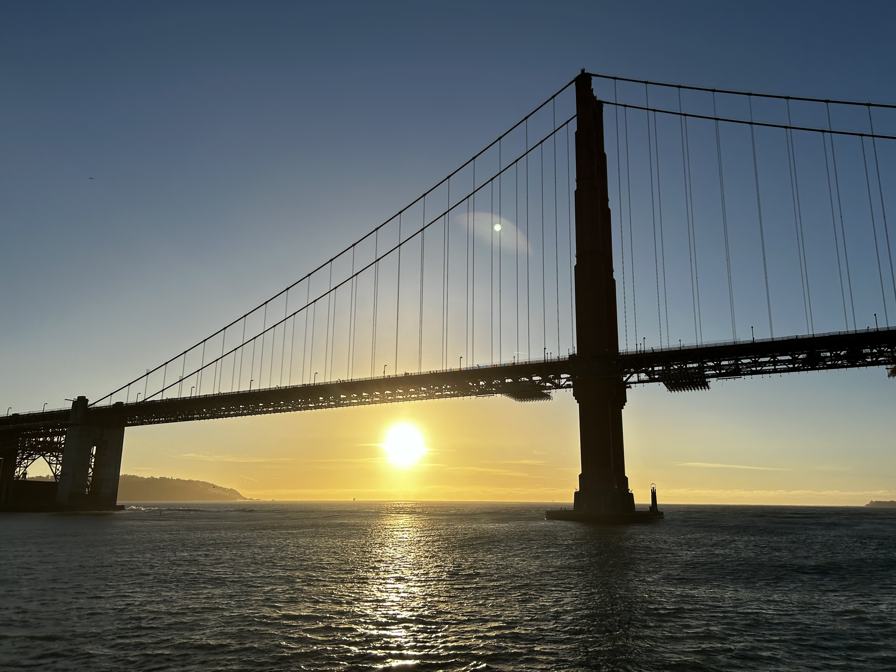

When I was in California, I visited numerous places: Point Reyes, the 101 highway (known as the most scenic highway in the world), San Francisco, Big Sur, Palo Alto, etc. Each destination taught me something different about adventure, stillness, and freedom. This challenged how I think about travel — and reminded me that beauty doesn’t always come with a price tag.
🌴🏜️⛰️🌄 California
Where every region feels like a different country — beaches, deserts, forests, and cities all in one state. I learned how to balance nature and culture in one trip.
Highlight: Big Sur drive, Point Reyes sunset, and Coit Tower overlooking downtown SanFran.
Budget Tip: Use university-area Airbnbs near Stanford or Berkeley for cheaper stays. 💵🏫
Destinations
Since I have chosen to highlight California, I wanted to show aspects people might not expect. There is more to this beautiful state than simply Hollywood and palm trees. While this list isn't exhaustive, these specific moments and pictures stood out to me ❤️
culture, food, or scenery. Use this as a springboard for your own planning.
Point Reyes — Ocean, lighthouses, rural, hills 🌊🦋
Big Sur — Mountains, best sunsets, rough terrain ⛰️🌲🌅
San Francisco — Golden gate, many events, tourism, trails, restaurants, Coit Tower, and colorful neighborhoods 🌁🌇🌈
Photo Grid

Some of my favorite pictures in California (most being in or near San Fran)